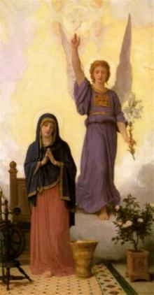
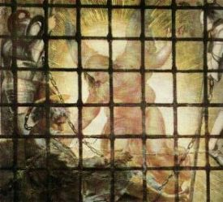
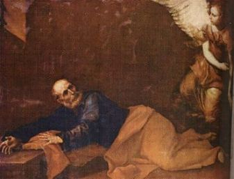
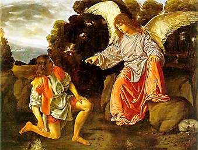
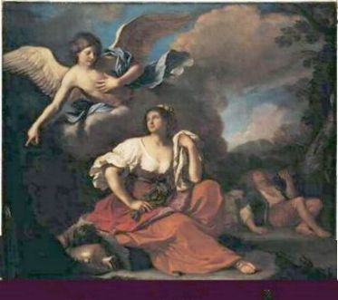

A Sagrada Escritura apresenta uma
quantidade incontável de intervenções angélicas em
acontecimentos de variada espécie, que realçam
de modo admirável e enternecedor, a presteza e eficiência
do serviço angélico e a grandeza da preocupação e
do Amor de DEUS pela humanidade em todos os
tempos.
Somente para mencionar, recomendamos
a leitura do Evangelho escrito por São Lucas e recordar as
palavras do Arcanjo Gabriel à NOSSA SENHORA, quando
ele anunciou a MARIA de Nazaré, que ELA era Alguém muito
especial nos planos de DEUS,  que estava repleta de graças
pelo Altíssimo e tinha sido escolhida para MÃE DO REDENTOR
(Lc 1,26-38). Uma cena belíssima, que destaca a humildade de
MARIA e apresenta o seu consentimento ao Plano Divino,
pronunciando o
"Sim" que permitiu ao CRIADOR
enviar o SALVADOR de todas as gerações da humanidade.
Outra passagem magnífica está no Evangelho escrito por São Mateus,
em que os Anjos deram a Maria de Magdala (Maria Madalena),
a notícia da Ressurreição de JESUS, quando no domingo após o
sepultamento ela e outras Santas Mulheres, foram ao túmulo para ungir
o Corpo do SENHOR. (Mt 28, 1-7)
que estava repleta de graças
pelo Altíssimo e tinha sido escolhida para MÃE DO REDENTOR
(Lc 1,26-38). Uma cena belíssima, que destaca a humildade de
MARIA e apresenta o seu consentimento ao Plano Divino,
pronunciando o
"Sim" que permitiu ao CRIADOR
enviar o SALVADOR de todas as gerações da humanidade.
Outra passagem magnífica está no Evangelho escrito por São Mateus,
em que os Anjos deram a Maria de Magdala (Maria Madalena),
a notícia da Ressurreição de JESUS, quando no domingo após o
sepultamento ela e outras Santas Mulheres, foram ao túmulo para ungir
o Corpo do SENHOR. (Mt 28, 1-7)
Centenas de outras citações bonitas e importantes são encontradas na
Sagrada Escritura, colocando em evidência o serviço e a permanente
disponibilidade dos Anjos, como eficientes auxiliares de DEUS.
A seguir, focalizaremos mais dois acontecimentos:
PRISÃO DE
SÃO PEDRO
Os Atos dos Apóstolos descreve:
"Naquele mesmo tempo,
começou o rei Herodes a maltratar alguns membros da Igreja.
Mandou
matar a espada Tiago Maior, irmão de João.
Vendo que isto agradava aos judeus, mandou prender também a Pedro.
Era nos dias dos pães Ázimos. Deteve-o e o lançou no cárcere,
entregando-o à guarda de quatro piquetes de quatro soldados cada
um; tencionava apresenta-lo ao povo depois da Páscoa. Enquanto
Pedro estava na prisão, a Igreja não cessava de fazer orações
a DEUS por ele. Ora, na noite em que Herodes estava para
apresenta-lo, Pedro dormia entre dois soldados, preso com duas
correntes, e diante da porta, sentinelas vigiavam a prisão. De
repente o Anjo do SENHOR apareceu, e a cela foi inundada de luz.
O Anjo tocou o lado de Pedro e despertou-o, dizendo: "Levanta-te! Depressa!"
E caíram-lhe das mãos as cadeias.
O Anjo lhe disse: "Cinge-te
e amarra as sandálias".
Foi o que ele fez. Acrescentou:
"Joga o teu 
manto sobre os ombros e
segue-me".
Pedro saiu e seguia-o, mas não sabia que era realidade o que
acontecia por meio do Anjo; julgava ter uma visão.
Franquearam, assim, o
primeiro posto da guarda, depois o segundo, e chegaram ao portão
de ferro que dá para a cidade. Ele se abriu por si mesmo diante
deles. Saíram e passaram por uma rua, quando subitamente o Anjo
desapareceu. Então Pedro, tornando a si, disse: "Agora sei
em verdade que o SENHOR enviou o seu Anjo e me livrou das mãos
de Herodes e da expectativa do povo judeu". (At
12,1-11)
TOBIAS
E O ARCANJO RAFAEL
O Livro de Tobias, no Antigo Testamento,
descreve nos capítulos de 5 a 12, a
viagem que ele,
Tobias, fez até a Média no Egito, guiado pelo Arcanjo Rafael,
que lhe apareceu como se fosse um simples guia, conhecedor daquela
região. O Arcanjo protegeu-o durante a viagem, inspirou-o
a casar-se com Sara, sua parenta, e curou a cegueira de seu pai
Tobit. Apresentamos a seguir a parte final dos
acontecimentos, conforme está no capitulo 12 do mencionado
livro:
"Terminados os dias
de bodas (festejos do casamento de
Tobias com Sara), Tobit
chamou seu filho Tobias e disse-lhe: Filho, já é tempo de
pagares o salário do homem que te acompanhou (na viagem), acrescentando também alguma gratificação. Tobias
respondeu: Pai, quanto devo dar-lhe pelos seus serviços? Mesmo
entregando-lhe a metade dos bens que trago comigo eu não teria
prejuízo. Reconduziu-me são e salvo, libertou minha mulher (de uma terrível possessão diabólica), trouxe-me o dinheiro (que ele Tobias, tinha viajado para busca-lo em
 Rages com Gabael, amigo de
seu pai) e, enfim,
te curou! (curou a vista de Tobit
que estava cego por causa de cataratas) Que recompensa devo dar-lhe?
Disse-lhe Tobit: Filho, ele bem merece a metade de tudo o que
trouxe. Chamou-o, pois, Tobias e disse-lhe: Toma como
salário a metade de tudo quanto trouxeste e vai em paz.
Rages com Gabael, amigo de
seu pai) e, enfim,
te curou! (curou a vista de Tobit
que estava cego por causa de cataratas) Que recompensa devo dar-lhe?
Disse-lhe Tobit: Filho, ele bem merece a metade de tudo o que
trouxe. Chamou-o, pois, Tobias e disse-lhe: Toma como
salário a metade de tudo quanto trouxeste e vai em paz.
Então Rafael chamou-os
à parte e disse-lhes: Bendizei a DEUS e proclamai entre todos os
viventes os bens que ELE vos concedeu; bendizei e cantai seu
Nome. Manifestai a todos os homens as ações de DEUS, como elas
o merecem, e não vos canseis de dar-lhe graças. É bom manter
oculto o segredo do rei; porém, é justo revelar e publicar as
obras de DEUS. Agradecei dignamente. Praticai o bem, e a
desgraça não vos atingirá. Boa coisa é a oração com o
jejum, e melhor é a esmola com a justiça do que a riqueza com a
iniquidade. É melhor praticar a esmola do que acumular o ouro.
A esmola livra da morte e purifica de todo o pecado. Os que dão
esmola terão longa vida; os que cometem o pecado e a injustiça
são inimigos da própria vida ... Eu sou Rafael, um dos sete
Anjos que estão sempre presentes e tem acesso junto à Glória
do SENHOR.
Ficaram ambos
(pai e filho)
cheios de espanto e caíram com a face em terra, com grande temor.
Mas ele lhes disse: Não tenhais medo; a paz esteja convosco! Bendizei
a DEUS para sempre. Se estive convosco, não foi por pura
benevolência minha para convosco, mas por vontade de DEUS. A ELE
deveis bendizer todos os dias, a ELE deveis cantar (todos os louvores e gratidões). Pareceu-vos que eu comia (quando vivia no meio de vocês) mas foi só
aparência. E agora, bendizei ao SENHOR sobre a Terra e daí
graças a DEUS. Vou voltar para AQUELE que me enviou. Ponde por
escrito tudo quanto vos aconteceu. E ele se elevou. Quando se
reergueram, não o viram mais. Louvaram a DEUS e entoaram hinos,
dando-lhe graças por aquela grande maravilha de haver-lhes
aparecido um Anjo de DEUS". (Tb
12,1-10.15-21)

Próxima Página

 Página
Anterior
Página
Anterior
Retorna
ao Índice